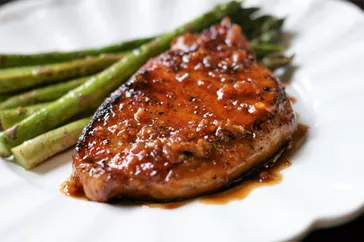

Quick and Easy Honey-Garlic Pork Chops

Description
This is a quick and easy recipe for pork chops in a flavorful honey-garlic sauce.
Ingredients
- 4 (5 ounce) pork chops
- salt and freshly ground black pepper to taste
- 1 teaspoon garlic powder
- 2 tablespoons olive oil
- 1 tablespoon unsalted butter
- 6 cloves garlic, minced
- ¼ cup honey¼ cup honey
- ¼ cup water
- 2 tablespoons rice vinegar